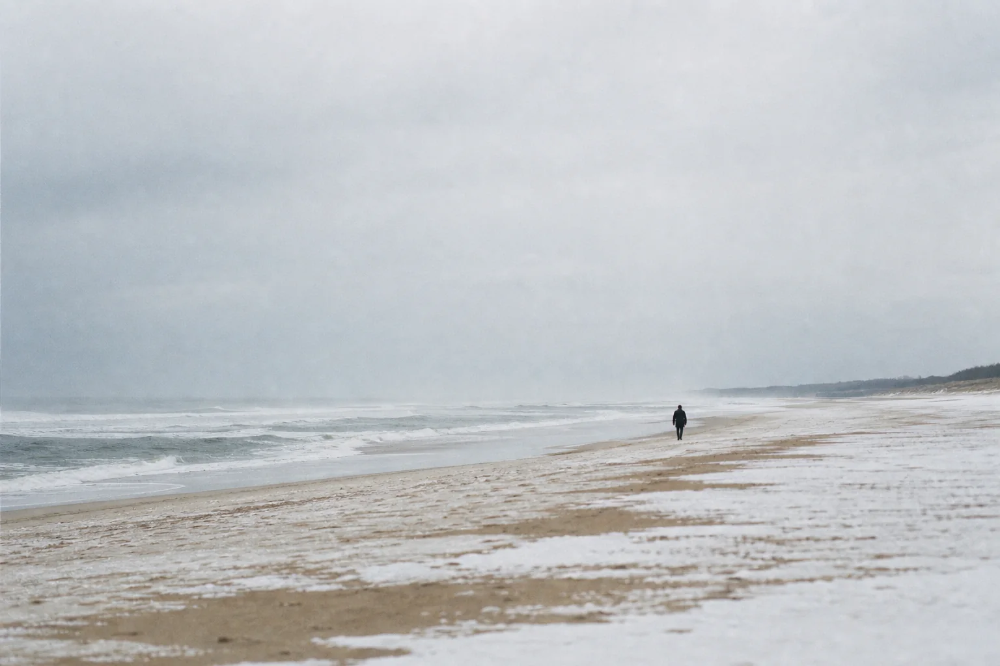
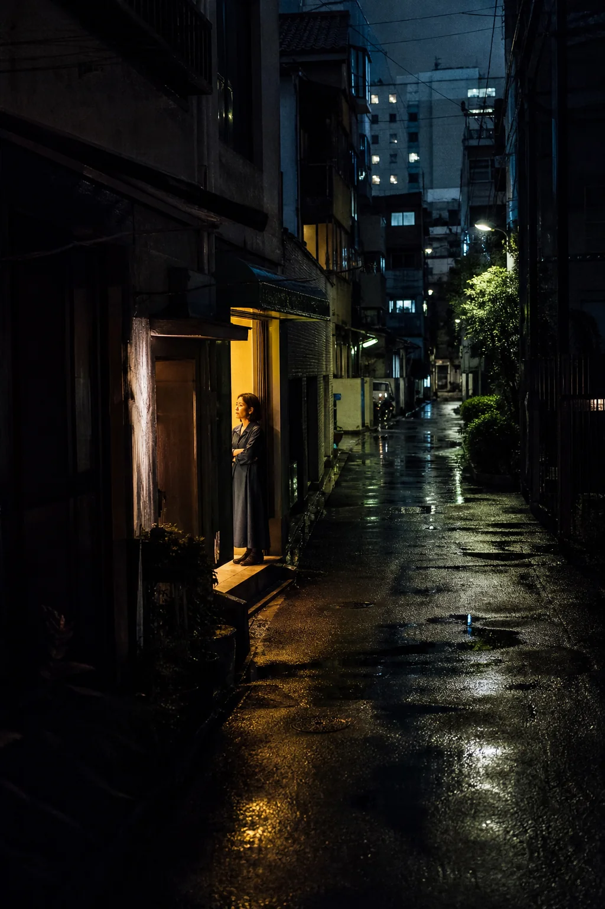

独立设计师 & 前端开发者
你好，我是林屿。我关注数字产品、视觉设计和人与技术之间那些细微却重要的连接。
CURIOUSBY DESIGN
SELECTED WORK

摄影 / 海边 / 2026

摄影 / 城市 / 2026
山止川行
THE MOUNTAIN& THE RIVER
Brand Identity / 2025
FIELD NOTES
设计思考
关于克制、秩序，以及一个界面如何悄悄影响人的判断。
工作方法
没有灵感的时候，先搭起一副能够继续思考的脚手架。
生活片段
一些关于阅读、散步、旧物和重新开始的小事。
A LITTLE ABOUT ME
过去 6 年，我一直在数字产品与品牌体验之间工作。对我而言，设计不是装饰，而是一种整理信息、理解他人，也理解自己的方式。